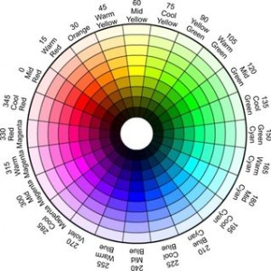

Modelo RGB
RGB es un modelo de color basado en la síntesis aditiva, con el que es posible representar un color mediante la mezcla por adición de los tres colores de luz primarios. de color RGB no define por sí mismo lo que significa exactamente rojo, verde o azul, por lo que los mismos valores RGB pueden mostrar colores notablemente diferentes en distintos dispositivos que usen este modelo de color. Aunque utilicen un mismo modelo de color, sus espacios de color pueden variar considerablemente.
Modelo HSL

En este modelo, la luminosidad o claridad se define como el promedio entre el mayor y el menor componente de color RGB. Esta definición pone los colores primarios y secundarios en un plano que pasa a mitad de camino entre el blanco y el negro. El sólido de color resultante es un cono doble similar al de Ostwald.
Hexadecimal

Valores de bytes código Hex de 00, que es la más baja intensidad de un color, a lo que representa el nivel más alto de intensidad. El color blanco, por ejemplo, se obtienen por la mezcla de los tres colores primarios en su máxima intensidad, y en el código Hex de color de #FFFFFF.